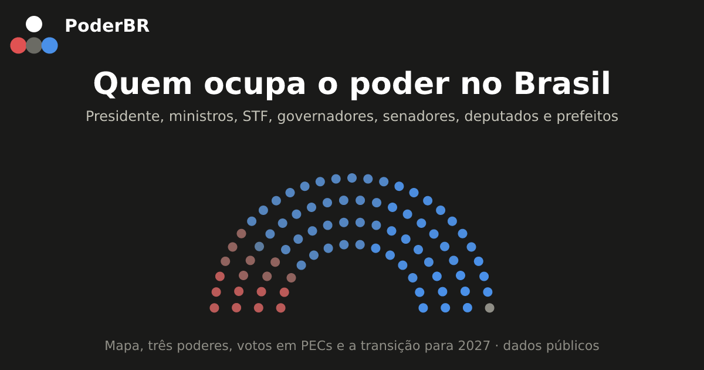

Quem ocupa o poder no Brasil
Presidente, ministros, STF, governadores, senadores, deputados e os prefeitos das 5.569 cidades, num quadro só.

Dados públicos da Câmara, do Senado, do TSE e do IBGE. A posição de esquerda e direita é a do partido de cada pessoa, segundo classificação de cientistas políticos — não é uma medida individual.